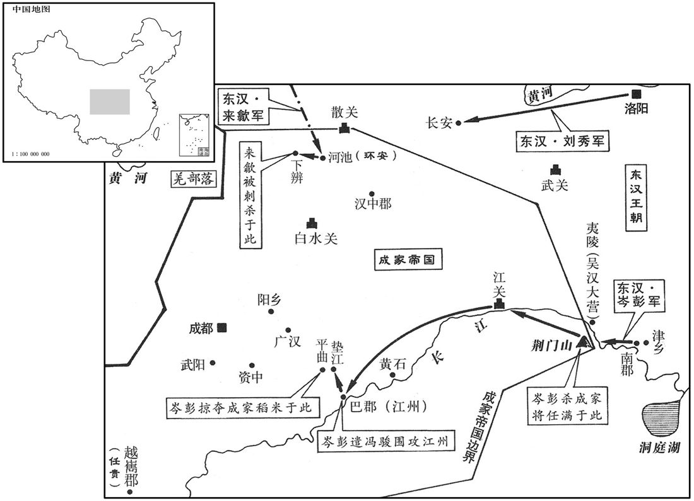
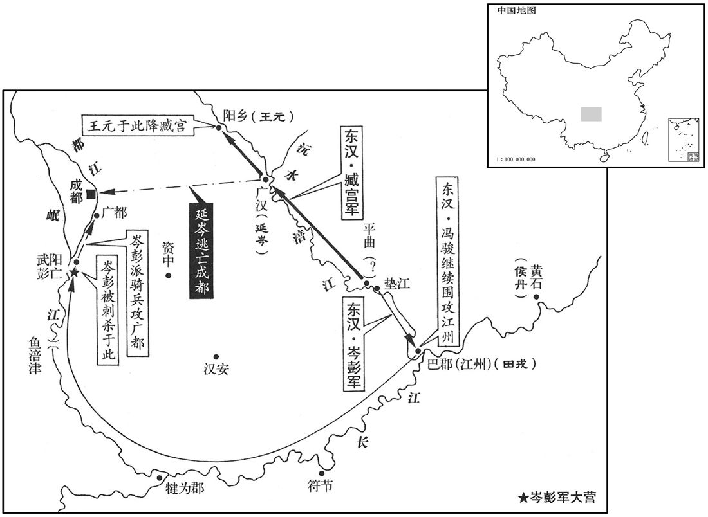
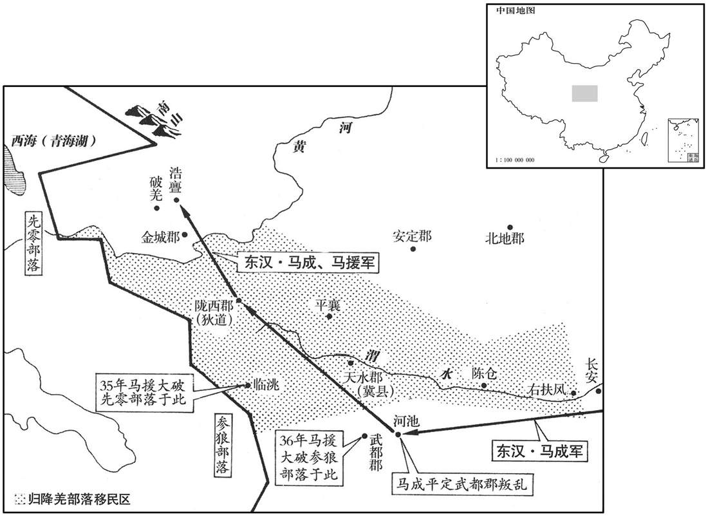

公元35年资治通鉴：本年记事、原文与白话对照
按原书编年位置阅读；追叙和史论不等于本年发生的事件。白话采用所据译本，缺译不以生成译文补齐。
卷42 · 本年记事
公元35年 · 汉世祖光武皇帝建武十一年
十一年〔（乙未、三五）〕
上传原文的注释括号有异常，字符原样保留；无法可靠划分的段落默认全文显示。
本年事件索引（现代整理）

本年形势与背景参考图

本年形势与背景参考图

本年形势与背景参考图
春，三月，己酉，帝幸南阳，〔考异曰：帝纪：「己酉，幸南阳，庚午，车驾还宫。」上有「二月己卯」。袁纪：「三月己酉，幸南阳。」以长历考之，二月壬申朔，己卯八日也。己酉、庚午，皆在三月。盖帝纪「己酉」上脱「三月」字。今从袁纪。〕还幸章陵；庚午，车驾还宫。
春季，三月己酉（初九），刘秀到南阳。又到章陵。庚午（三十日），回到洛阳皇宫。
岑彭屯津乡，数攻田戎等，不克。〔数，所角翻。〕帝遣吴汉率诛虏将军刘隆等三将，发荆州兵凡六万余人、骑五千匹，与彭会荆门。彭装战船数千〔【章：十二行本「千」作「十」；乙十一行本同。】〕艘，〔艘，苏遭翻。〕吴汉以诸郡棹卒多费粮谷，欲罢之；〔棹卒，持棹行船者也。〕彭以为蜀兵盛，不可遣，上书言状。帝报彭曰：「大司马习用步骑，不晓水战，荆门之事，一由征南公为重而已。」〔彭为征南大将军，故称为征南公。〕
岑彭驻屯津乡，几次攻打田戎等，不能取胜。刘秀派遣吴汉率领诛虏将军刘隆等三位将领，征调荆州军队共六万余人、骑兵五千人，与岑彭在荆门会师。岑彭武装战船数千艘，吴汉因为各郡派来的水兵消耗粮食太多，打算遣散。岑彭认为公孙述的兵力强盛，不能遣散，上书说明情况。刘秀答复岑彭说：“大司马习惯用步兵骑兵，不懂水战。荆门方面的事，全凭征南大将军岑彭作主。”
闰月，岑彭令军中募攻浮桥，先登者上赏。于是偏将军鲁奇应募而前，时东风狂急，鲁奇船逆流而上，直衂浮桥，〔上，时掌翻。〕而攒柱有反把钩，〔反杷钩者，既钩住敌船，使不得退，又逆拒之使不得进也。〕奇船不得去；奇等乘势殊死战，因发炬焚之，风怒火盛，桥楼崩烧。岑彭悉军顺风并进，所向无前，蜀兵大乱，溺死者数千人，斩任满，生获程泛，而田戎走保江州。
闰三月。岑彭在军中招募攻击浮桥的战士，下令先登上浮桥的，给予上等奖赏。于是偏将军鲁奇应募前行。当时东风刮得十分猛烈，鲁奇的船逆流而上，直冲浮桥。但密排在江中的木柱装有反拉的杷钩，钩住鲁奇的船，进退不能。鲁奇等乘势作殊死战斗，便掷火炬焚烧浮桥。风狂火烈，桥楼烧毁崩塌。岑彭率领全军顺风并进，所向披靡。公孙述的军队大乱，落水淹死数千人。岑彭斩杀任满，活捉程；田戎逃跑，据守江州。
彭上刘隆为南郡太守；〔先以隆守南郡而上奏也。上，时掌翻。〕自率辅威将军臧宫、骁骑将军刘歆长驱入江关。〔华阳国志：巴、楚相攻，故置江关，旧在赤甲城，后移在江州南岸，对白帝城。故城在今夔州鱼复县南，即古捍关也。杜佑曰：巴山县，古扞关。如此则别是一处。〕令军中无得虏掠，所过百姓皆奉牛酒迎劳，彭复让不受；〔劳，力到翻。复，扶又翻。〕百姓大喜，争开门降。〔降，户江翻。〕诏彭守益州牧，所以郡辄行太守事，彭若出界，即以太守号付后将军。〔后将军者，将兵继彭后而进者也。〕选官属守州中长吏。
岑彭奏请刘秀任命刘隆为南郡太守，自己率领辅威将军臧宫、骁骑将军刘歆，长驱直入江关。下令军中，不得掳掠。军队所到之处，百姓们都奉献牛肉美酒迎接慰劳大军。岑彭一再推辞，不肯接受。百姓大喜，争着打开城门归降。刘秀下诏，任命岑彭代理益州牧；攻下某郡，则兼任某郡太守，岑彭如果离开某郡，就把太守的职位交付后面接防的将领。岑彭挑选属官作为益州的代理行政官员。
彭到江州，以其城固粮多，难卒拔，〔卒，读曰猝。〕留冯骏守之；自引兵乘利直指垫江，攻破平曲，〔贤曰：垫江，县名，属巴郡，今忠州县也。按宋白续通典：忠州垫江县本后汉临江县地，后魏恭帝分临江置垫江县。合州石镜县，本汉垫江县，凡合州管下诸县，皆汉垫江地也。垫，音徒协翻。平曲，地阙。〕收其米数十万石。吴汉留夷陵，装露桡继进。〔尔雅曰：懢谓之桡。露桡，谓露懢在外，人在船中。桡，音饶。〕
岑彭抵达江州，因为江州城池坚固，粮食充足，难以很快攻陷，便留冯骏看守，自己乘胜直指垫江县，攻占平曲，获得稻米数十万石。吴汉留在夷陵，乘坐只露桨楫的战船，继续前进。
夏，先零羌寇临洮。〔临洮县，属陇西郡。零，音怜。洮，音韬。〕来歙荐马援为陇西太守，〔郡国志：陇西郡，在雒阳西二千二百二十里。〕击先零羌，大破之。
夏季，先零羌部落侵犯临洮。来歙举荐马援当陇西太守。马援率军进击，大败先零羌部落。
公孙述以王元为将军，使与领军环安拒河池。〔姓谱：环，姓也，楚环列尹之后；又楚有贤者环渊。河池县，属武都郡。〕六月，来歙与盖延等进攻元、安，大破之，遂克下辨，〔辨，皮苋翻。〕乘胜遂进。蜀人大惧，使刺客刺歙，未殊，〔未殊，谓未绝也。客刺，七亦翻。〕驰召盖延。延见歙，因伏悲哀，不能仰视。歙叱叱延曰：「虎牙何敢然！〔延为虎牙大将军，故以虎牙称之。〕今使者中刺客，无以报国，〔中，竹仲翻；下同。〕故呼巨卿，欲相属以军事，〔盖延，字巨卿。属，之欲翻。〕而反效儿女子涕泣乎！刃虽在身，不能勒兵斩公邪！」延收泪强起，受所诫。〔强，其两翻。〕歙自书表曰：「臣夜人定后，〔日入而群动息，故甲夜谓之人定。〕为何人所贼伤，中臣要害。〔何人，谓不佑何人也。〕臣不敢自惜，诚恨奉职不称，以为朝廷羞。〔称，尺证翻。〕夫理国以得贤为本，太中大夫段襄，骨鲠可任，〔贤曰：骨鲠，谓正直也。说文曰：鲠，鱼骨也；食骨留咽中为鲠。〕愿陛下裁察。又臣兄弟不肖，终恐被罪，陛下哀怜，数赐教教督。」〔被，皮义翻。数，所角翻。〕投笔抽刃而绝。〔凡为人所刺者，刃在身犹未死，抽刃则气绝矣。〕帝闻，大惊，省书揽涕；〔省，悉景翻。〕以扬武将军马成守中郎将代之。歙丧还洛阳，乘舆缟素临吊，送葬。〔乘，绳证翻。〕
公孙述任命王元为将军，命他和领军环安在河池御敌。六月，来歙和盖延等进攻王元、环安，大败敌军。于是攻克下辨，乘胜前进。蜀人十分恐慌，派刺客行刺来歙，来歙未死，命人紧急召来盖延。盖延看到来歙，伏地哀痛，不能抬头仰视。来歙斥责盖延说：“你怎么敢这个样子！现在我被刺客刺中，不能报效国家，所以叫你来，要把军事托付给你，你反而学小儿女那样哭吗！刀虽然在我身上，我就不能用兵杀了你吗？“盖延收住眼泪，勉强起身接受嘱托。来歙亲手书写奏章，说：“我在深夜时，不知被什么人刺伤，中了要害。我不敢痛惜自己，深恨没有尽到职责，给朝廷带来羞辱。治理国家以能够任用贤才为根本，太中大夫段襄，正直刚强，可以重用，望陛下裁决明察。此外我的兄弟不贤，最终恐会获罪，请陛下可怜他们，时常都诲监督。”写罢，扔掉笔，拔出凶器，气绝身亡。刘秀听到消息，极为震惊，一面看奏章，一面流泪。任命扬武将军马成代理中郎将，接替来歙。来歙的灵车运回洛阳。刘秀乘车，身穿丧服，亲自吊丧、送葬。
赵王良从帝送歙丧还，入夏城门，〔雒阳十二城门，夏门位在亥。〕与中郎将张邯争道，叱邯旋车；又诘责门候，〔百官志：城门校尉掌雒阳十二城门，每门候一人。邯，户甘翻。〕使前走数十步。司隶校尉鲍永劾奏「良无藩臣礼，大不敬。」良尊戚贵重，而永劾之，〔劾，户概翻，又户得翻。〕朝廷肃然。永辟扶风鲍恢为都官从事，〔百官志：司隶校尉从事史十二人，都官从事，主察举日官犯法者。蔡质汉仪曰：都官主雒阳朝会，与三府掾同。〕恢亦抗直，不避强御。帝常曰：「贵戚且敛手以避二鲍。」
赵王刘良跟随刘秀为来歙送葬回来，进入夏城门，和中郎将张邯争夺道路，呵斥张邯掉转车头；又责骂守卫城门的门候，罚他往前走数十步。司隶校尉鲍永弹劾刘良：“刘良不守藩臣的礼节，犯了大不敬之罪。”刘良是尊贵显要的皇族，而鲍永弹劾他，朝廷对鲍永肃然起敬。鲍永任命扶风鲍恢当都官从事。鲍恢也刚正不屈，不畏强权显贵。刘秀常说：“皇亲贵戚姑且收敛，以避开二鲍。”
永行县到霸陵，〔司隶校尉，主三河，三甫、弘农。霸陵县，属京兆。行，下孟翻。〕路经更始墓，下拜，哭尽哀而去；西至扶风，椎牛上苟谏耱。〔苟谏保护鲍永事见三十六卷更始二年。上，时掌翻。〕帝闻之，意不平，问公卿曰：「奉使如此，何如﹖」〔武帝置十三州刺史，皆部使者也。司隶今出所部，故言奉使。使，疏吏翻。〕太中大夫张湛对曰：「仁者，行之宗，忠者，义之主也；仁不遗旧，忠不忘君，行之高者也。」〔行，下孟翻。〕帝意乃释。
鲍永到霸陵巡查，途经刘玄坟墓，下拜，哭泣尽哀才离开。向西到达扶风，杀牛祭奠苟谏的坟墓。刘秀知道后，心里不痛快，问公卿说：“奉皇帝的使命，做这样的事，怎么样呢？”太中大夫张湛回答说：“仁，是行为的宗旨；忠，是道德的主宰。仁者不忘故旧，忠者不忘君王，鲍永的行为是高尚的。”刘秀的不满才消除。
帝自将征公孙述；秋七月，次长安。
刘秀将亲率大军征讨公孙述。秋季，七月，抵达长安。
公孙述使其将延岑、吕鲔、王元、公孙恢悉兵拒广汉及资中，〔广汉县，属广汉郡。贤曰：资中，县名，属犍为郡，其地在今资州资阳县。宋白曰：资州诸县，皆汉资中地；盘石县，资州治所，汉资中故城也。〕又遣将侯丹率二万余人拒黄石。〔贤曰：即黄石滩也。水经注曰：江水自涪陵东出百里而届于黄石。在今涪州涪陵县。杜佑曰：今谓之横石滩。〕岑彭使臧宫将降卒五万，从涪水上平曲，拒延岑，〔涪，音浮，杜佑音符。水经：涪水出广汉属国刚氏道徼外，东南流径涪县北，又东南径鼦竹县北，即臧宫涪至平阳乡之地。涪水又东南与建始水合。水发平洛郡西溪，西南流，屈而东西流。意此即平曲也。上，时掌翻。〕自分兵浮江下还江州，泝都江而上，〔贤曰：都江，成都江也。宋白曰：郫江，一名都江，一名成都江。〕袭击侯丹，大破之；因晨夜倍道兼行二千余里，径拔武阳。〕贤曰：武阳县，属犍为郡，故城在今隆州隆山县东也；又曰：故城在今眉州。刘昫曰：唐陵州仁寿县，汉武阳县地；或曰：今眉州眉山彭山县，本汉武阳县地。杜佑曰：汉武阳县故城，在嘉州绥山县东。〕使精骑驰击广都，去成都数十里，〔贤曰：广都，县名，属蜀郡，故城在今益州成都东南。宋白曰：蜀志，汉元朔二年置广都县；隋仁寿元年，避炀帝讳，改为双流；唐龙朔三年，析双流县，又置广都县于旧县南一十二里。〕势若风雨，所至皆奔散。初，述闻汉兵在平曲，故遣大兵逆之。及彭至武阳，绕出延岑军后，蜀地震骇。述大惊，以杖击地曰：「是何神也！」
两版字句有差异，建议核对原文。
公孙述派将领延岑、吕鲔、王元、公孙恢调动所有的兵力，据守广汉和资中。又派将领侯丹率领二万余人据守黄石。岑彭命臧宫率领归降士兵五万人，沿涪水而上到平曲，对抗延岑。岑彭自己率领军队从垫江乘船由长江而下返回江州，又逆都江而上，袭击侯丹，大破敌军。然后日夜兼程，急行军二千余里，径直攻陷武阳。又派出精锐骑兵，疾驰袭击广都，离成都数十里。攻势如暴风骤雨，兵锋所至，公孙述的军队全都奔逃四散。当初，公孙述听说东汉军队在平曲，所以派大军迎击。等到岑彭进抵武阳县，绕到延岑军队的背后，蜀地之人震骇。公孙述大惊，用杖敲打地面，说：“怎么这样神速！”
延岑盛兵于沅水。〔帝纪作「沈水」，此作「沅」，承臧宫传之误也。贤曰：水经注曰：沈水出广汉县，下入涪水。本或作「沉水」及「沅水」者，并非。余据今潼川府通泉县北有沈水。〕臧宫众多食少，转输不至，降者皆欲散畔郡邑，复更保聚，观望成败。〔复，扶又翻。〕宫欲引还，恐为〔音去声。〕所友；〔贤曰：反，音翻。〕会帝遣谒者将兵诣岑彭，有马七百匹，宫矫制取以自益，晨夜进兵，多张旗帜，登山鼓噪，右步左骑，〔帜，昌志翻。骑，奇寄翻。〕挟船而引，呼声动山谷。岑不意汉军卒至，〔呼，火故翻。卒，读曰猝。〕登山望之，大震恐，宫因纵击，大破之，斩首溺死者万余人，水为之浊。〔为，于伪翻。〕延岑奔成都，其众悉降，〔降，户江翻。〕尽获其兵马珍宝。自是乘胜追北，〔贤曰：人好阳而恶阴，北方幽阴之地，故军败者皆调之北。史记乐书曰：北者，败也，近代音北为背，失其指矣。〕降者以十万数。军至阳乡，〔臧宫传作「平阳乡」，此逸「平」字。水经注曰：臧宫泝涪至平阳，公孙述将王元降，遂拔绵竹。涪水经绵竹县北，则平阳乡当在绵竹县界。〕王元举众降。
延岑在沅水布下大军。臧宫人多粮少，粮草等物资运输不继，投降的官兵都想逃散背叛，当地郡县城邑又重新屯聚堡垒自守，以观望成败输赢。臧宫想率军撤退，，恐怕会引起大规模反叛。正巧，刘秀派谒者带兵到岑彭那里，有战马七百匹。臧宫假传圣旨，全部收取充实自己。不分昼夜地进军，树起许多旗帜，登上山头擂鼓呐喊。右岸是步兵，左岸是骑兵，护卫着战船推进，呼喊声震动山谷。延岑想不到东汉的军队会突然到来，登上山头眺望，大为震恐。臧宫趁机纵兵攻击，大败敌军，斩首、淹死的有一万余人，水流都因此变得混浊了。延岑逃奔成都，他的军队全都投降，臧宫夺得延岑所有的兵马珍宝。于是乘胜追击败兵，投降的公孙述军队数以十万计。大军抵达阳乡，王元率部众投降。
帝与公孙述书，陈言祸福，示以丹青之信。述省书太息，以示所亲。太常常少、光禄勋张降皆劝述降。述曰：「废兴，命也，岂有降天子哉！」左右莫敢复言。少、隆皆以忧死。〔省，悉景翻。少，诗照翻。复，扶又翻。〕
刘秀给公孙述写信，陈述利害祸福，表示坚决信守的承诺。公孙述看信叹息，把它给亲信传阅。太常常少、光禄勋张隆全都劝公孙述投降。公孙述说：“一废一兴，都是天命，岂有投降的天子呢？”左右不敢再说话。常少、张隆都因过度忧虑而死。
帝还自长安。
刘秀从长安返回洛阳。
冬，十月，公孙述使刺客诈为亡奴，降岑彭，夜，刺杀彭；〔刺杀之刺，七亦翻。〕太中大夫监军郑兴领其营，以俟吴汉至而授之。彭持军整齐，秋豪无犯。邛谷王任贵闻彭威信，数千里遣使迎降；〔任贵降述事见四十卷元年。邛，渠恭翻。任，音壬。〕会彭已被害，〔被，皮义翻。〕帝尽以任贵所献赐彭妻子。蜀人为立庙祠之。〔为，于伪翻。〕
冬季，十月，公孙述派刺客谎称是逃亡的奴仆，归降岑彭，在夜间刺杀了岑彭。太中大夫、监军郑兴统领他的军队，等待吴汉率军赶到后移交。岑彭治军严格，秋毫无犯。公孙述封的邛谷王任贵听说了岑彭的威望信誉，从几千里之外派使者来投降。正赶上岑彭已被杀害，刘秀把任贵所献的礼品全都赐予岑彭的妻子儿女。蜀郡人为岑彭立庙来祭祀他。
马成等破河池，遂平武都。〔郡国志：武都郡在雒阳西一千九百里。〕先零诸种羌数万人，屯聚寇钞，拒浩亹隘。〔零，音怜。种，章勇翻。钞，楚交翻。浩亹，音浩门。〕成与马援深入讨击，大破之，徙降羌置天水、陇西、扶风。
东汉将军马成等攻陷河池，于是平定武都郡。先零部落和其他羌人部落共计数万人，屯聚起来，进行侵扰掠夺，据守在浩隘。马成和马援深入其地讨伐，大败羌人。把投降的羌人迁徙安置在天水、陇西、扶风。
是时，朝臣以金城破羌之西，〔破羌县属金城郡。贤曰：故城在今鄯州湟水县西。宋白曰：湟水县本汉破羌县地，后魏得羌地，于此置西都县；隋改为湟水。〕涂远多寇，议欲弃之。马援上言：「破羌以西，城多坚牢，易可依固；〔易，以豉翻。〕其田土肥壤，〔贤曰：无块曰壤。〕灌溉流通。知令羌在〔张：「在」作「有」。〕湟中，则为害不休，不可弃也。」帝从之。民归者三千余口，援为置长吏，缮城郭，〔为，于伪翻。长，知两翻。〕起坞候，〔字林曰：坞，小障也，字或作「↨」，一古翻。〕开沟洫，〔洫，况域翻。〕劝以耕牧，郡中乐业。〔乐，音洛。〕又招抚塞外氐、羌，皆来降附，援奏复其侯王君长；帝悉从之。乃罢马成军。
这时，朝臣们认为，金城郡破羌县以西路途遥远，盗贼又多，主张放弃。马援上书说：“破羌县以西，城多坚固，易于固守。那里土地肥沃，灌溉方便。如果让羌人占有湟中地区，就会为害不止，不可以放弃。”刘秀同意。老百姓回归的有三千余人。马援为他们设置官吏，修缮城郭，筑起坞堡亭候，开挖沟渠，鼓励耕田放牧，郡中人民安居乐业。马援又招抚塞外的氐人、羌人，使他们都来归附，并奏请刘秀恢复他们侯王首领称号。刘秀全都赞同。于是命马成班师。
郭伋为并州牧，过京师，〔过，古禾翻。〕帝问以得失，伋曰：「选补众职，当简天下贤俊，不宜专用南阳人。」是时在位多乡曲故旧，故伋言及之。
郭担任并州牧，经过京城洛阳，刘秀询问他为政的得失，郭说：“选拔补充各级官吏，应当从全国这个大范围选取贤能和俊杰，不应专用陛下的那些南阳郡同乡。”这时担任官职的很多都是刘秀的同乡或故旧，所以郭谈到这一点。
译本中未与胡注本可靠对应的内容
以下另列供核对版本差异，不并入胡注本正文。
译本所附古文
[11]十二月，吴汉自夷陵将三万人溯江而上，伐公孙述。
译本白话
十二月，吴汉从夷陵率领三万大军，逆长江而上，讨伐公孙述。